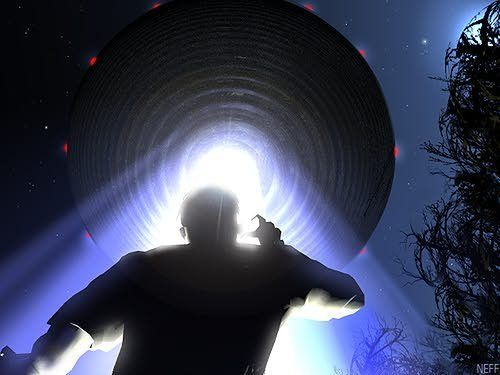

ALL THE INFO U NEED ABOUT UFOS
FUTURE PLANETARY ALIGNMENT??
POLESHIFT, WHEN, WHERE, AND HOW?
Explore More
Exact position and alignment meaning of planets
Hillary Clinton's UFO investigation plans
Eyewitness Accounts and Mysterious Alien Encounters
Planet X Nibiru Elite Seeking Refuge Underground
Egyptian Mythology, Planet X Prophecies, and WWII Connections